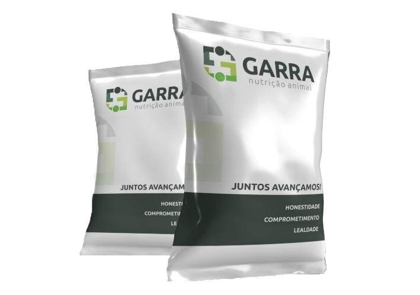

Aditivos: Monensina, Levedura, Biotina, Nexulin, DigestUP
Consumo: 700g/dia
Vitaminas: A: 114.285 UI/kg | D: 46.428 UI | E: 857 UI
Minerais: Zn: 1.428mg | Mn: 714mg | Cu: 357mg
Aditivos: Monensina, Micotoxinas, Cloreto de Cálcio Microencapsulado
Consumo: 550g/dia
Vitaminas: A: 200.000 UI | D: 50.000 UI | E: 5.500 UI
Minerais: Zn: 900mg | Mn: 700mg | Cu: 300mg
Aditivos: Probiótico, Levedura, Biotina, Sangrovit
Composição: Milho, Aveia, Minerais Orgânicos
Vitaminas: A: 4.800 UI | B1: 2mg | B2: 4,5mg | B12: 24mcg